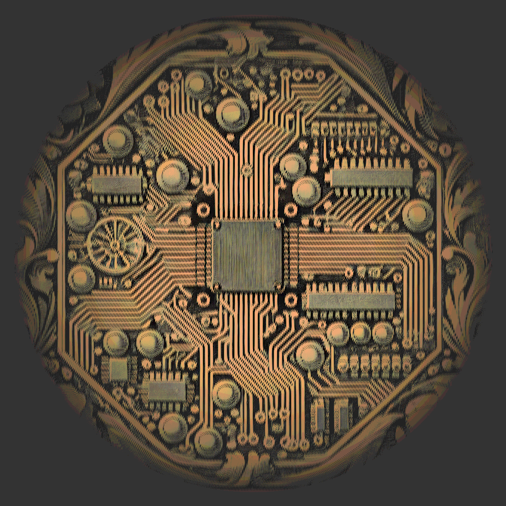

A New Look at Use Cases |

|
Date | 2019-07-01 |
|---|---|---|---|
| Tags |
This is the second in a quasi-series of posts in which I moan about bits that I don’t like in SysML/UML. This time, I’m taking a look at the use case diagram and arguing for a different way of modelling the concept to the UML and SysML specs.
To begin our exploration into how use cases, here are three definitions of use case from around the internet:
A description of the behavioral requirements of a system and its interaction with a user. [1]
A description of a potential scenario in which a system receives an external request (such as user input) and responds to it. [2]
A list of actions or event steps typically defining the interactions between a role (known in the Unified Modeling Language (UML) as an actor) and a system to achieve a goal [3]
Each of these definitions describe the use case as the scenario surrounding the interations between actors and the system we would like to design. We could even interpret a use case as a container for an instance of the system under development and it’s actors; a microcosm of the universe where the goal our design will meet is the only thing that matters.
Now look at the SysML/UML use case diagram:
 > An example of a UML/SysML use case diagram.
> An example of a UML/SysML use case diagram.
The notation of use cases suggests a rather different interpretation of the use case than the definitions. The use cases are inside the system boundary, suggesting that use cases are somehow contained inside the system. Possibly as system behaviours? To muddy the waters further, the SysML specification seems to agree with the other definitions:
The use case diagram describes the usage of a system (subject) by its actors (environment) to achieve a goal, that is realized by the subject providing a set of services to selected actors. The use case can also be viewed as functionality and/or capabilities that are accomplished through the interaction between the subject and its actors. [4]
An important point to make about modelling languages is that they are not just diagram notation. Each element in a model exists in an underlying ontology with which diagrams (and other engineering artefacts) can be produced. When we look at the underlying relationships between the elements in this diagram we don’t find much useful meaning. Actors are related to the use case with a simple association. This denotes that the actors communicate with the use case in some way. This doesn’t give us much to go on unless we impose meaning that’s not in the specification. The system boundary simply has no relation to other elements in many modelling tools.
This can also manifest as confusion when putting use cases in the modelling tool. Where do the use case elements live? Inside the block/class of the system under development? Generally the use case analysis is done in a different package to the rest of the modelling. But this feels like a bit of a cop-out when we’re supposed to be moving from a document-based to a integrated architecture-view based way of sytems engineering.
So where did this diagram come from? The clearest answer that I can find is that the notation and its meanings are relics from the birth of UML.
Use case analysis was developed as one of the main approaches to object-oriented software development in the 80s by Ivar Jacobson. In fact, Jacobson called his method Object-oriented software Engineering (OOSE). It was this method that introduced the stick men and bubble notation. When Jacobson was locked in a room at Rational software with Rumbaugh and Booch to make sure they came up with a unified notation for software, Jacobson’s Objectory notation made it into the UML relatively unscathed. Thankfully, Booch’s class notation didn’t make the final cut.
Microcosmic Use Cases
To be no part of any body, is to be nothing. John Donne
So what happens if we reconcile the SysML/UML use case with the interpretation gleaned from the internet definitions? In this section we’ll take a look at what happens to use cases when we try to model the use case as a microcosm that is composed of the actors and a version of the system.
It becomes clear that the association between a use case and an actor is now a composition relationship; actors exist and interact with our system within the scope of our use case. Another odd semantic that comes from this is that use cases must be composed of the system under development too. This turns the original notation of use cases being within a system boundary on its head. Below is an example block definition diagram of the relationships to illustrate the advocated relationships.
 > An illustration of my suggested use of use case elements.
> An illustration of my suggested use of use case elements.
The semantic elegance of this way of representing use cases really comes into its own when you represent the interactions in a use case with activities or sequences. Internal block diagrams can then be used to represent a context diagram showing interfaces between the instances of the actors and system under development. All of the elements are neatly withing scope. The scope also applies to swimlanes in activities and lifelines in sequences. A block definition diagram can be used to illustrate an overview of the use cases and the actors at the top level if required.
In my own head, I like to imagine the use cases as the “main functions” of a model. Use cases form that top level entry point to a model where the interpreter can “run” the overall behaviour, drilling down through the composition relationships if they would like to understand the lower levels of abstraction.
I hope that this post and the last post inspire the systems engineering community to critique the UML/SysML languages instead of taking them for granted. In many ways, UML and SysML are held in the 90’s “Java/C#/Classical OOP is the zenith of programming” mindset. As the software world boldly steps into the new paradigm of functional programming with Haskell, Elm, Kotlin, Scala &c. I feel the time is right for systems engineers to shed the trends of the 90s too1. In a future post, I will show how patterns from functional programming can be used to design for failure in activity diagrams.
References
[1] ISO/IEC/IEEE. 2011. Systems and software engineering: Developing user documentation in an agile environment. Geneva, Switzerland: International Organization for Standardization (ISO)/International Electrotechnical Commission (IEC)/ Institute of Electrical and Electronics Engineers (IEEE). ISO/IEC/IEEE 26515:2011.
[2] From Wiktionary, Creative Commons Attribution/Share-Alike License.
[3] https://en.wikipedia.org/wiki/Use_case
[4] OMG 2015 OMG Systems Modeling Language (OMG SysML™) Version 1.4 http://www.omg.org/spec/SysML/1.4/
- After all, did anyone really enjoy trance without the chemical encouragement?